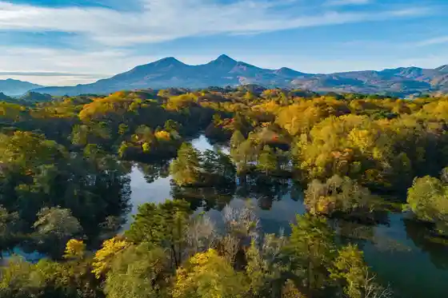
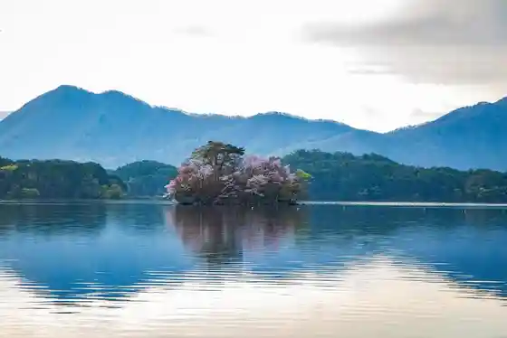
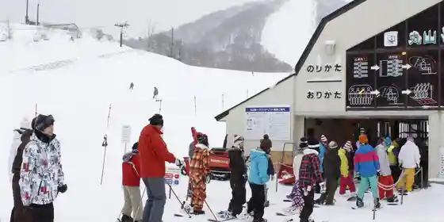
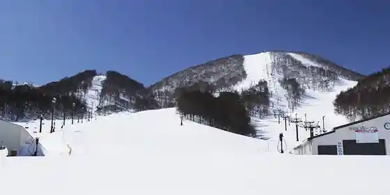

Morohashi Kindai Art Museum
Kitashiobara, Fukushima · 0241-37-1088 · Official / source link
Nakase Numa
Kitashiobara, Fukushima · 0241-32-2349 · Official / source link

Hibara Mizumi Ni Uka Bu (Sakura Shima)
Kitashiobara, Fukushima · 0241-32-2349 · Official / source link

Urabandai Ski Area
Kitashiobara, Fukushima · 0241-32-2177 · Official / source link

Hoshino Resort Nekoma Maunten (Kyu Nekoma Ski Area)
Kitashiobara, Fukushima · 0242-74-5000 · Official / source link

Gurandekosu no Resort
Kitashiobara, Fukushima · 0241-32-2530 · Official / source link
Aizu Yama Shio Ramen
Kitashiobara, Fukushima · 0241-32-2349 · Official / source link
Kanu Kayakku Experience (Urabandai)
Kitashiobara, Fukushima · 0241-32-2349 · Official / source link
Su no Shu Experience (Urabandai)
Kitashiobara, Fukushima · 0241-32-2349 · Official / source link
Urabandai Bijita Center
Kitashiobara, Fukushima · 0241-32-2850 · Official / source link
Urabandai Saitosuteshon
Kitashiobara, Fukushima · 0241-23-7860 · Official / source link
Wakasagi Tsuri
Kitashiobara, Fukushima · 0241-32-3468 · Official / source link
Aizu Yama Shio
Kitashiobara, Fukushima · 0241-33-2340 · Official / source link
Yukoku Numa Marsh
Kitashiobara, Fukushima · 0241-32-2349 · Official / source link
Onokawa Fudo Taki
Kitashiobara, Fukushima · 0241-32-2349 · Official / source link
Hibara Mizumi
Kitashiobara, Fukushima · 0241-32-2349 · Official / source link
Kyoku Sawa Numa
Kitashiobara, Fukushima · 0241-32-2349 · Official / source link
Goshiki Numa Kosho Gun
Kitashiobara, Fukushima · 0241-32-2349 · Official / source link
Nakatsugawa Gorge
Kitashiobara, Fukushima · 0241-32-2349 · Official / source link
Mizu Basho
Kitashiobara, Fukushima · 0241-32-2349 · Official / source link
Sakura Toge
Kitashiobara, Fukushima · 0241-32-2349 · Official / source link
Aizu Yonezawa Kaido Hibara Rekishikan
Kitashiobara, Fukushima · 0241-34-2200 · Official / source link
Roadside Station Urabandai Byu Park
Kitashiobara, Fukushima · 0241-33-2241 · Official / source link
Oshio Urabandai Onsen
Kitashiobara, Fukushima · 0241-33-2233 · Official / source link
Yukoku Yama
Kitashiobara, Fukushima · 0241-32-2349 · Official / source link